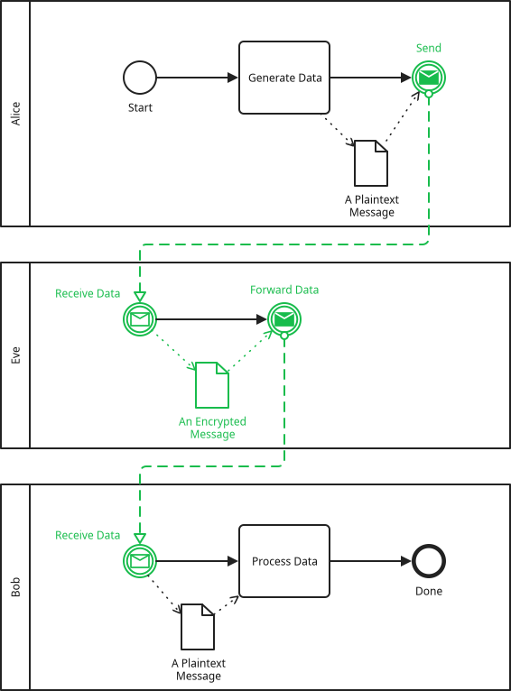

PE-BPMD / PE-BPMN
Just Show Me Something, Dammit!
Before we jump into a wall of text, here is the output of the PE-BPMD analysis for a trivial example.

| Pool | A Plaintext Message |
|---|---|
Alice |
V |
Eve |
H |
Bob |
V |
Network |
H |
= Alice
# Start
- Generate Data
. Send
= Eve
# Receive Data
. Forward Data
= Bob
# Receive Data
- Process Data
. Done
// Only the first name, "A Plaintext Message", is used in the visibility table header.
OD A Plaintext Message <-alice-generate ->alice-send
& An Encrypted Message <-eve-receive ->eve-forward
& A Plaintext Message <-bob-receive ->bob-process
MF <-alice-send ->eve-receive
MF <-eve-forward ->bob-receive
// This is the extension.
[pe-bpmd
(secure-channel @alice-send @bob-receive)
(stroke-color #18bc4c)
]Introduction
Privacy-Enhanced BPMN (PE-BPMN) is an extension to BPMN to analyse data leakage. You have a bunch of pools, and a bunch of data, and you want to answer the question "Who can see what data?" Refer to this research paper which introduces this extension: PE-BPMN: Privacy-Enhanced Business Process Model and Notation
The implementation of this extension in the bpmd tool is my interpretation of the goals of
PE-BPMN, so I call it PE-BPMD.
Obviously PE-BPMD operates on a very high level, on a business process level. If you are a cryptography researcher researching cryptographic algorithms, then this tool is totally incapable of addressing your needs. But if you want to communicate, on a high level, to lay persons that a given business process is leaking data, and how you plan to enhance the process to fix the data leakage, then PE-BPMD could help.
Visibility Table
The primary result of the PE-BPMD analysis is the color coding in the diagram, and the visibility table. This explains who can see what data. PE-BPMN originally has four visibility categories: visible, accessible, hidden, and inaccessible (I believe). I extended it with a fifth one, physically compromisable which is due to peculiarities of the TEE technologies (TODO reference the respective paragraph on the TEE page when it exists).
- Visible (V)
-
The pool creates or receives the plaintext form of the data.
- Accessible (A)
-
The pool does not see the plaintext form of the data, but they can do something which gives them access to the plaintext form of the data. For example, they might receive at one point the encrypted data, and at another point the key to decrypt the data. So they are technically capable of decrypting the data and see the plaintext. In my interpretation of these categories, if one would use a weak implementation of an algorithm, say RSA with keys of 512 bit length, then this would technically also be "A" since you just need to throw enough dollars at the problem and the protection is surmounted within a relatively short time frame (less than 3 years).
- Physically Compromisable (P)
-
Used for TEEs which protect against software attacks but not so much against physical attacks against the hardware. From the viewpoint of the pool this is identical to Accessible. However, I added this distinction because oftentimes a pool is not by itself untrusted (i.e. the employees of the company are all good-natured), but we consider that an attacker can infiltrate their virtual premises. In this case it is important to know that a viable attack vector requires physical access instead of just virtual access.
- Hidden (H)
-
The pool receives the ciphertext/unintelligible form of the data. This protection cannot be undone even if we throw a supercomputer at the problem for the next ten years.
- Inaccessible (empty)
-
The pool never creates or receives or otherwise would be capable of getting their hands onto any form of the data. Hence they can’t even attempt to guess the decryption key for the data for a couple of billion years.
The visibility table creates an "idealized" output, and you must ensure that the implementation is actually sound. For example, in the past, people had a hard time configuring TLS in a secure way outside of the browser environment (TODO citation needed), so although they used a secure channel which gives an "H" in the visibility table, it was very much an "A" for the real-world attacker. Similarly, using TEEs in a secure, future proof way requires a deep understanding of the potential pitfalls, so even if the table says "H", you may implement it in a way that it is prone to future vulnerabilities. In other words, an attacker might be able to wait for the next big security vulnerability (let’s say two or three years) and then decrypt your data. So technically that is more of an "A", but the high-level nature of the PE-BPMD won’t detect that. The visibility table reports the "idealized" (better) protection, because if we just assumed whatever you model will have a broken implementation anyway, than why model it in the first place. But yes, my interpretation is experimental, I would like to see different opinions, and maybe one can even detect dangerous patterns and output "A" instead of "H" in those situations.
The PE-BPMN paper has more table types which I might add in the future (data dependency table and the extended visibility table).
Protection Primitives
PE-BPMN has many annotations of varying granularity (you can refer to this list of stereotypes). I reduced the scope, or annotation kinds, in PE-BPMD. In my opinion the granularity does not help a lay person to better understand the higher level of data leakage prevention. On the contrary, I think if they would try to dive into the different kinds of secret sharing they’d rather become more confused. For the modeler the big selection of protection kinds creates a false impression of being a kind of theorem proofer to validate your goals, but this is not the case. All the thinking should be done in advance, PE-BPMD is first and foremost just a tool for you to present a high level view from your plans. Just because the analysis creates a visibility table doesn’t mean that it is a reasonable plan, nor that the implementation would be free of pitfalls. (I know I repeat myself, but this is just a very important point that needs repetition. It is just too easy to create a broken system and create a false sense of security.)
The following list represents the existing primitives for PE-BPMD. If the technologies are unknown to you, then you are still welcome to have a look at the more detailed pages which introduce all of them and show them in action (within the scope of BPMN). (The introductory texts are obviously simplified and full of caveats, so please excuse the brevity.)
- Secure Channel
-
You say where data is protected and where the protection is undone. In the simplest form, that’s about it.
I think about adding an extended version where the encryption key can be explicitly modeled for more complicated situations which is not just a TLS connection.
- Trusted Execution Environments
-
CPU extensions which allow to execute code in a protected environment. The host (operating system, hypervisor, a root user) cannot look into that environment, i.e. it ideally™ becomes impossible for an attacker to extract encryption keys or other secrets from a running program, while the program uses that data. At the same time, a remote user can cryptographically verify that the correct (trustworthy) program is running in the protected environment. Since this was once my area of expertise, I experimented with new additions that have not been part in PE-BPMN.
- Multi-Party Computation (Work In Progress)
-
I am no expert in MPC technology, so read this with a grain of salt. I primarily had tangential familiarity with the secret-sharing kind of MPC. In this model, data is not processed on a single CPU, but it is split into shares and then sent to let’s say three different machines. They do some fancy math, and in the end someone can bring the results of each individual machine together into a meaningful (correct) answer, even though each individual machine just saw what looked to them like random data. If the machines are now operated by independent people or organisations (Example Corp. A, Example Corp. B and University of Privacy Enhancing Technologies) who don’t tell each other what they saw, then the data is protected.
If you have further suggestions for technologies to support in PE-BPMD (where you think this is not covered by any of the aforementioned ones), then create an issue!. For example, I think about adding a "pseudonymise" primitive, maybe also an "anonymise" primitive, but I need to give it more thought.